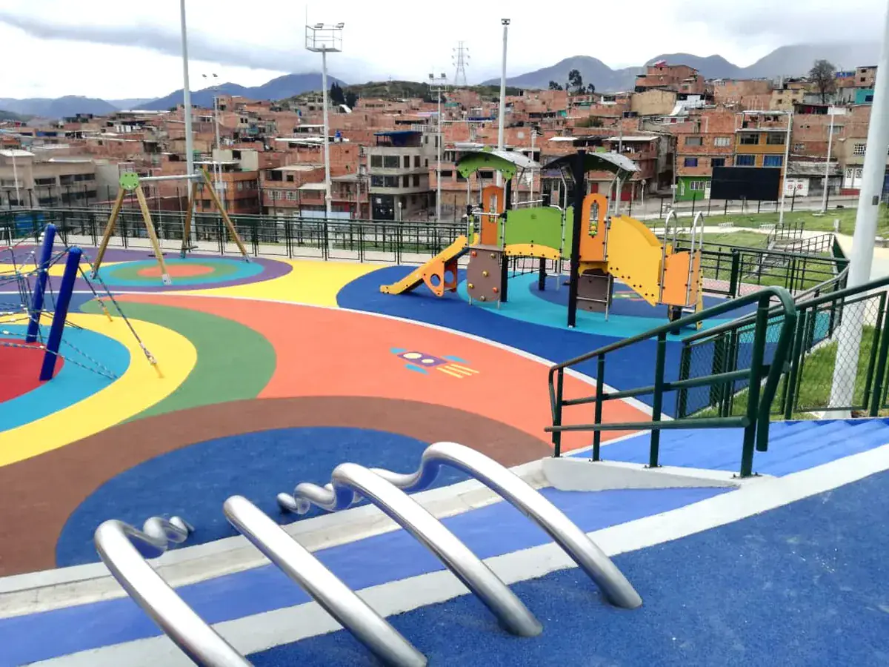
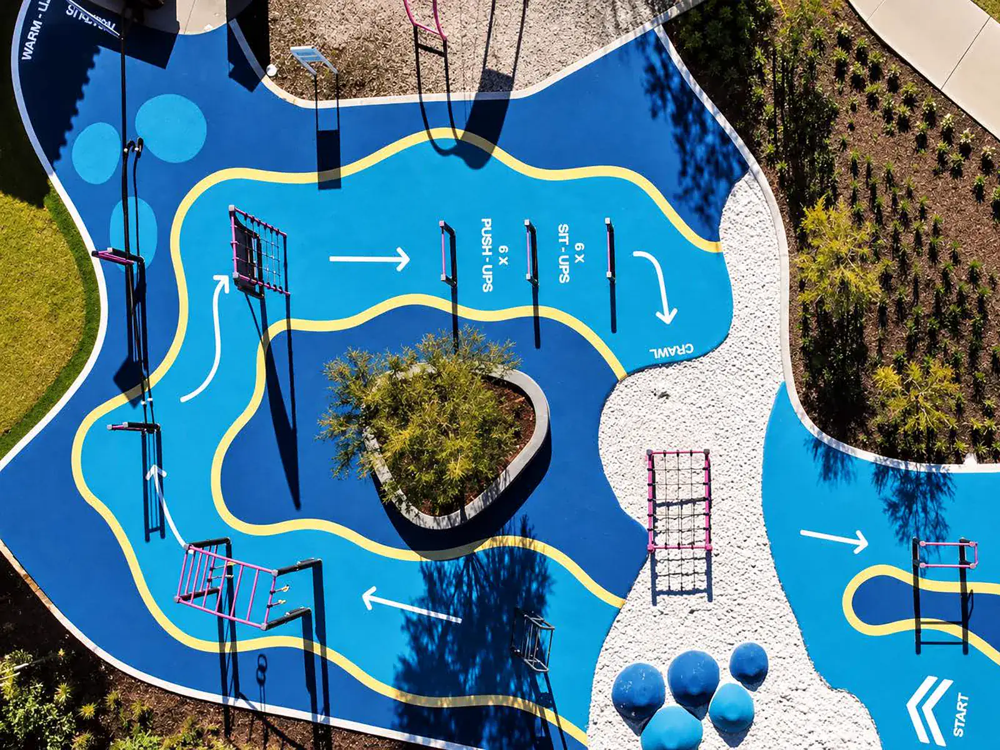
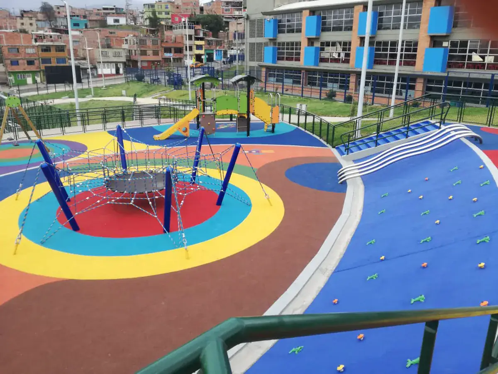
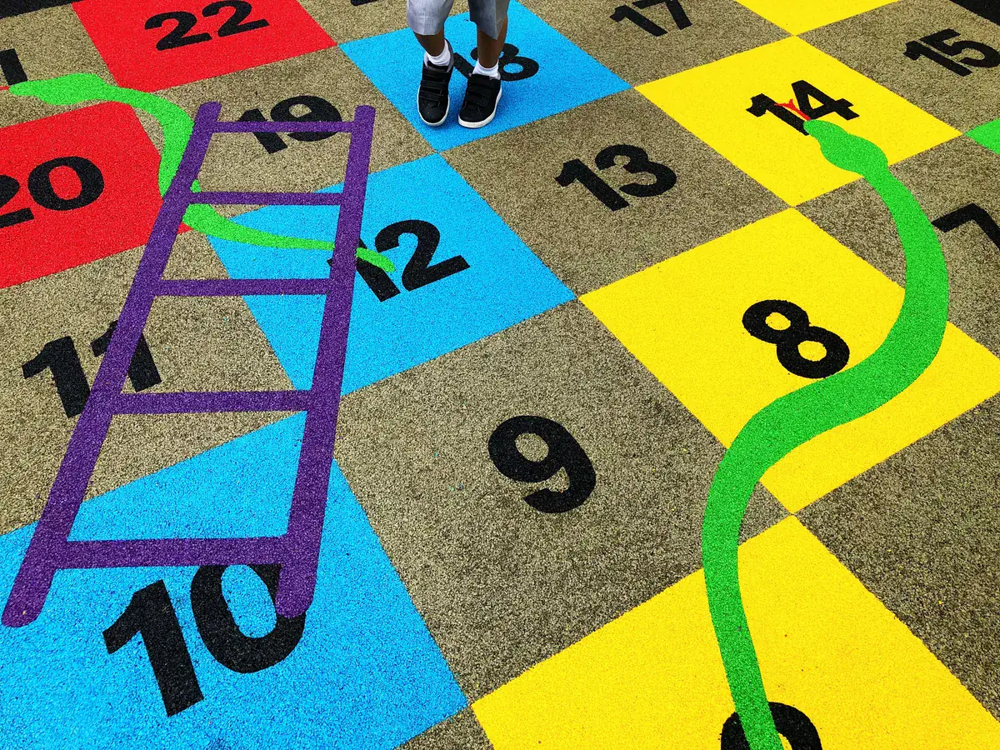
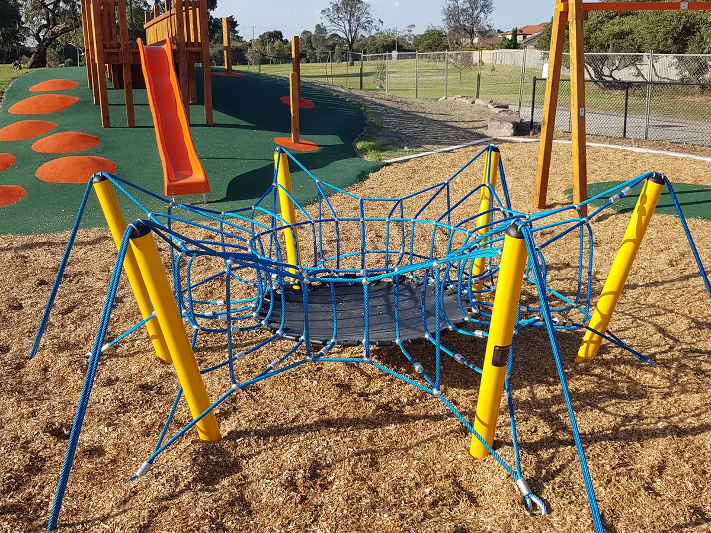
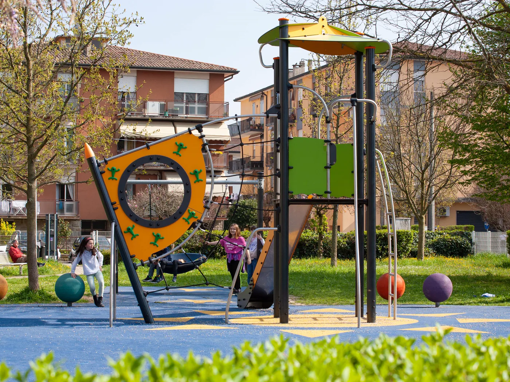

Caucho continuo
Se vierte en obra, queda sin juntas y permite dibujar formas y colores sobre el mismo piso. Es el acabado que mejor envejece y el único que admite el espesor exacto que pide cada juego, zona por zona.
Pisos en caucho y pintura para mejorar la seguridad, la resistencia y el acabado de las áreas recreativas y deportivas. Es la parte del proyecto que menos se mira y la que decide cómo termina una caída.

No hay un piso mejor que otro: hay uno que corresponde a cada altura, a cada área y a cada presupuesto de mantenimiento.

Se vierte en obra, queda sin juntas y permite dibujar formas y colores sobre el mismo piso. Es el acabado que mejor envejece y el único que admite el espesor exacto que pide cada juego, zona por zona.

Piezas prefabricadas: se instala más rápido y se reemplaza una a una cuando se daña. Buena opción cuando el área es pequeña o cuando hay que intervenir sin cerrar el parque entero durante varios días.

Pintura y demarcación para canchas y circuitos: líneas, zonas, recorridos y numeración. Cambia por completo cómo se usa una placa que hasta ayer era solo una plancha de cemento gris.

Alternativas para zonas de menor altura de caída o para integrar el área de juego con el resto del parque. Cuestan menos de instalar y más de mantener, y eso hay que decidirlo antes y no después.

Contamos con todas las herramientas necesarias para crear lugares soñados y volver realidad cada proyecto imaginado.
En superficies eso empieza por una cuenta que casi nadie hace: el espesor se calcula contra la altura de caída de cada módulo, no contra el área. Dentro de un mismo parque puede haber espesores distintos a tres metros de distancia, y unificarlos es el error más caro de corregir, porque implica levantar lo que ya está puesto.
Ver los proyectos terminadosUn equipo certificado mal instalado deja de cumplir, y la superficie no se elige por metro cuadrado sino por la altura de caída de cada módulo. Contamos la cadena completa —qué certifica el fabricante, qué define la superficie, qué responde el instalador y qué papeles te quedan a ti— en una página aparte.
Ver normativa y certificacionesEl que pida la altura de caída crítica del juego que va encima, declarada en su ficha técnica. No se calcula por área ni se unifica: dentro del mismo parque puede haber espesores distintos. Si nos pasas las fichas de los juegos, te decimos exactamente qué lleva cada zona.
El continuo queda sin juntas, permite diseño libre y envejece mejor, pero se instala en obra y necesita condiciones de clima. La baldosa se monta más rápido y se repara pieza por pieza, que es una ventaja real cuando no se puede cerrar el espacio. En áreas pequeñas suele ganar la baldosa; en parques completos, el continuo.
Muchas veces sí, y es lo más económico. Depende del estado de la placa, de su drenaje y de su nivel: una base que acumula agua arruina cualquier superficie en poco tiempo. Lo revisamos en sitio antes de cotizar.
Sí, pintura y demarcación deportiva para canchas, circuitos de ejercicio y recorridos. Es de las intervenciones con mejor relación entre costo y cambio visible, sobre todo en placas que ya existen.
Más de lo que la gente espera si la base está bien hecha, y mucho menos si no. Lo que la acorta casi siempre es el drenaje, no el uso. Por eso insistimos en revisar la base antes y no empezar por el color.
Cuéntanos qué quieres transformar y te proponemos una solución a la medida.
Cotiza tu proyecto